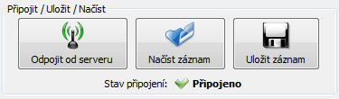
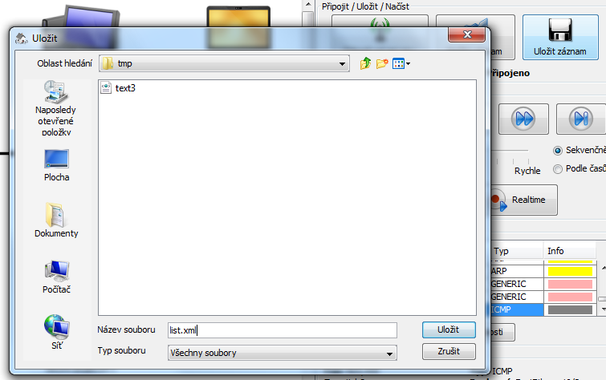
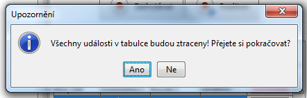

Pro uložení a načtení událostí slouží tlačítka Načíst záznam a Uložit záznam v panelu Připojit/Uložit/Načíst:
Pokud jsou v seznamu nějaké události, otevře se po kliknutí na Uložit záznam standardní okno pro ukládání. Zvolte umístění kam soubor uložit a stiskněte talčítko Uložit:
Načtení událostí je podobné jako jejich uložení. Po stistku tlačítka Načíst záznam se otevře okno s výběrem souboru, kerý chcete načíst. Pokud již jsou v tabulce nějaké záznamy, program se zeptá, zda si je přejete nahradit:
Tímto končí druhý tutorial. Můžete pokračovat: třetím tutorialem.